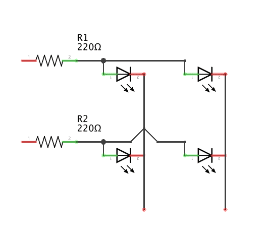
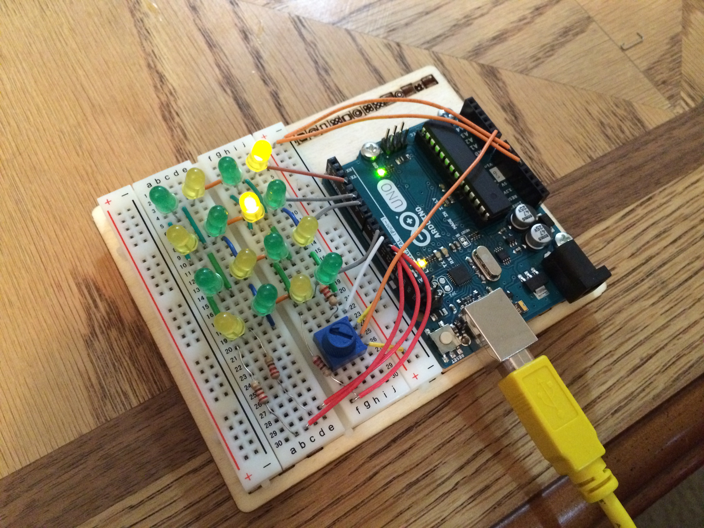
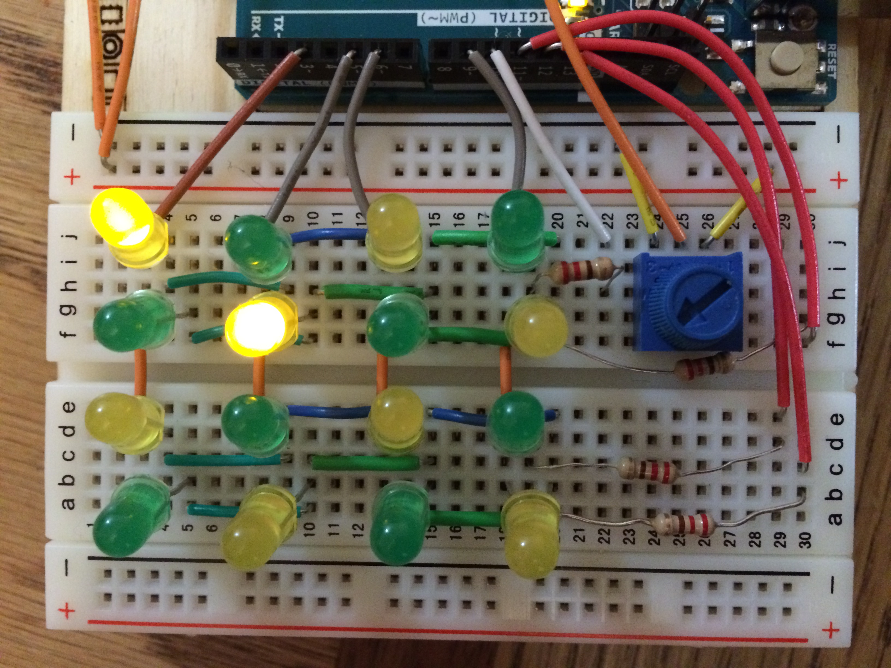
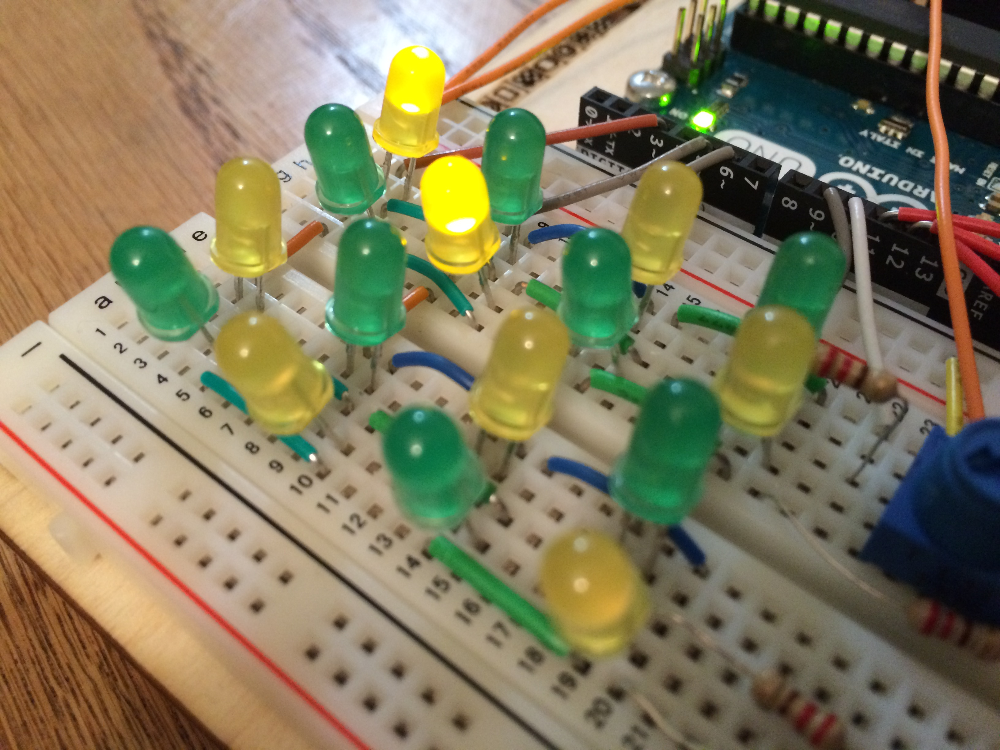

Blink project: Hacking on an Arduino
For my Physical Computing & Alt Interfaces class we had to use an Arduino (I have the latest Uno) to control LED(s) in a non-trivial way. I knew I wanted to make some kind of LED matrix, but didn’t know how big of one I could make on my half sized breadboard and limited number of pins. What I ended up with was a 16 LED (4x4) matrix controlled by just 8 pins, each of which can be individually controlled.

So how does that work? Basically you wire it up so each row and column are interconnected and each has it’s own, you can get a rough idea how it works in my simplified schematic to the right. To light up an LED all you need to do is set the row or column that its anode is connected to HIGH to give it current and then set the row or column that its cathode is connected to LOW grounding the circuit. This way even though 4 LED’s are getting current and 4 LED’s are grounded, only 1 is completing the circuit and lighting up. The code would look something like this:
// pins for my anodes
int row[] = {3,5,6,9};
// pins for my cathodes
int col[] = {10,11,12,13};
// Prime all the LED's
void led_setup() {
for (int i = 0; i < 4; i++) {
pinMode(row[i], OUTPUT);
}
for (int j = 0; j < 4; j++) {
pinMode(col[j], OUTPUT);
}
allOff();
}
// Shortcut to turn off all the LEDs
void allOff() {
for (int i = 0; i < 4; i++) {
digitalWrite(row[i], LOW);
}
for (int i = 0; i < 4; i++) {
digitalWrite(col[i], HIGH);
}
}
// And finally light the LED!
void lightPin(int i, int j) {
digitalWrite(row[i], HIGH);
digitalWrite(col[j], LOW);
}
What if we want to light up multiple LED’s at once? Well, that depends, if they’re on the same row or column than there’s no problem we can light them up as before. But what if they’re are diagonally adjacent (as in (0,0) and (1,1)), by turning on the pins to those 4 pins we are completing the circuit for 4 LEDs instead of just the two we wanted!

One way to deal with this is to light just one LED at a time, but swap back and forth between them faster than the human eye can detect. This works quite well actually, it ends up becoming a balancing act between giving enough time for the current to light up the LED and not waiting long enough for humans to be able to detect the flicker. In my own experience the best value varies with the LED and resistors that you happen to be using, so you will probably have to experiment. In the end I went with 2 milliseconds for the best balance.
So how did I manage to stuff all of this wiring onto a half-sized breadboard? The trick is to use the built in wiring that the breadboard gives you. Put all of the your anodes or cathodes on the same row (whichever ones you decide to line up with the breadboards internal wiring), and then place the opposite lead one or two slots over (alternate, remember these should not share a row, but rather a column). With this technique you only need 4 wires to setup the rows (shoot the gap in the middle) and it only takes up 3 breadboard rows each, which leaves you just enough room to wire in the columns, which are a little bit more tricky, but doable because you were so space efficient with the rows. That was probably a fairly confusing, hopefully the following pictures should clear it up.


So cool we’ve got an LED matrix what to do with it? The first thing I did was make a little bar graph to test how well I could control the individual LEDs. This evolved into something like a music visualizer, only it’s not visualizing a music signal, just the Arduino’s random number generator.
That was cool, but I also wanted to make something a little more interactive, so I hooked up a potentiometer to a separate 5V power source and an analog pin. From there I use the signal from the potentiometer to steer one light as it moves about the screen. In the script your able to set the speed, degrees of control, and whether it wraps or bounces off the walls. It’s kind of fun to play with, but would greatly benefit from another one or two rows of LEDs to wander about on, but as is it is a pretty cool proof of concept.
All the code used in this project is available as a gist on my github.